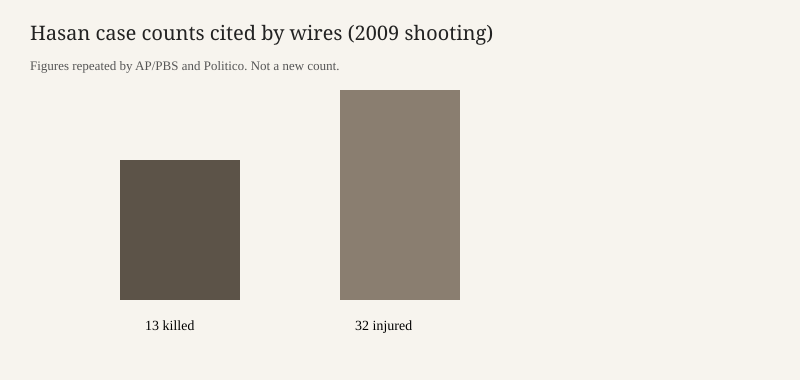

Fort Hood · military justice · 9 October 2026
The Pentagon said the 3 December firing-squad execution of Nidal Malik Hasan will be livestreamed

What is agreed across desks
On Thursday 8 October 2026 the Defense Department said the firing-squad execution of Nidal Malik Hasan will be livestreamed. Associated Press copy carried by PBS NewsHour said Pentagon officials clarified that the execution will be livestreamed and that more details would follow. Politico reported the same departmental statement. The Washington Post reported a Defense Department statement that the execution will be live-streamed for the public.
The date in those accounts is 3 December. Hegseth, speaking to Real America’s Voice, said the execution would be at Fort Hood and, in Politico’s account, at 1 p.m., “which is when he did it.” Hasan, a former Army psychiatrist, was convicted of killing 13 people and wounding 32 others at the Soldier Readiness Processing Center at Fort Hood on 5 November 2009. Those casualty figures are repeated across the AP, Politico, and Post accounts. They are the trial result, not a new count from this week.
Sean Parnell, a Pentagon spokesperson, had said on Monday that President Donald Trump approved the execution. That approval, without a livestream, was already in this dossier’s 6 October pages. Thursday’s new checkable item is the broadcast method and the December date attached to Hegseth’s interview.
What is only a quote
Hegseth’s sentences — that Hasan will “get a firing squad of soldiers,” that people will be able to watch, and that the public needs to understand consequences — are quotations from an interview with Jack Posobiec’s outlet. They describe an intention. They are not a published execution order with a camera plan, a URL, a delay, or a list of what will be shown. The Pentagon’s clarification that the event will be livestreamed is a statement by officials. A written protocol was not in the stories used here.
The claim that this would be the first military execution in more than 65 years is a historical comparison in the AP and Politico copy. The last military execution was of Army private John Bennett in 1961. That date is standard in secondary histories; this page does not re-check the Army’s execution ledger. The claim that the United States has not held a public execution in nearly 100 years is a civilian-history sentence in Politico. A livestream is not the same procedure as a courthouse-square hanging. Treating them as identical is an interpretation.
Hegseth’s reply, when asked whether Hasan had made final requests — “Don’t care. We’ll see him on December 3rd” — is a quote. It is not evidence about what requests were or were not filed. AP noted that Hasan could seek a civilian habeas review, which could delay an execution. That is a legal possibility stated by experts in the wire copy, not a filing confirmed in these stories.
Mechanism a reader needs
A court-martial death sentence does not carry itself out. Under the Uniform Code of Military Justice the president must approve a military death sentence before it can be executed. Trump’s approval, as described by the Pentagon on Monday, is that step. The method — firing squad rather than lethal injection — was the method the president approved. Location and time are operational decisions described by the secretary. A livestream is a further decision about public access. Military commissions and courts-martial have historically allowed selected witnesses. Broadcasting the death itself on the internet is what the Thursday statement added. None of the stories used here quote a statute that requires a livestream. The absence of a cited statute does not make the statement false. It means the legal basis was not in the copy.
Hasan was shot by responding officers in 2009 and has been described as partially paralyzed and using a wheelchair. That physical fact is relevant to how a firing squad is arranged. It is not a finding about competence. Competence litigation is a separate track and was not the subject of Thursday’s announcement.
What this story is not
It is not a description of an execution that has happened. It is not a verdict on whether a livestream is lawful, cruel, or useful. It is not a replay of the 2009 evidence. The Tennessee execution of Christa Pike, which failed earlier in October, is a different jurisdiction and a different method. Mentioning it explains why reporters reached for a comparison. It does not transfer facts from one case to the other. The photograph is the Pentagon building, the agency that spoke, not a portrait of the condemned man and not a picture of a squad.

Source articles and scores
| Outlet | Headline | T | N | C |
|---|---|---|---|---|
| AP via PBS | Pentagon says firing squad execution of Fort Hood shooter will be livestreamed | 94 | 0 | 92 |
| Washington Post | Fort Hood shooter’s execution will be live-streamed, Defense Dept. says | 92 | -4 | 88 |
| Politico | Pentagon says it will publicly execute Fort Hood shooter — and livestream it | 88 | -8 | 80 |